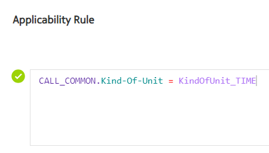
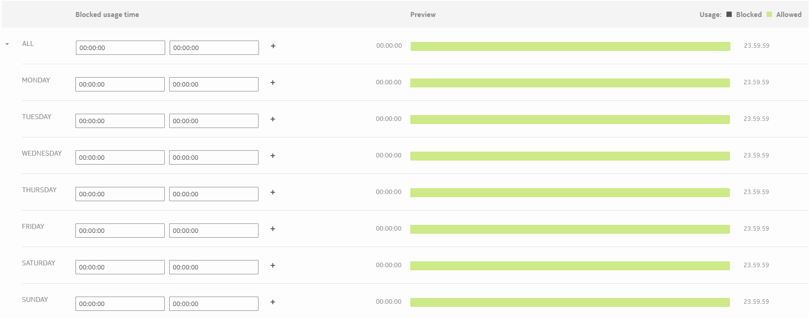
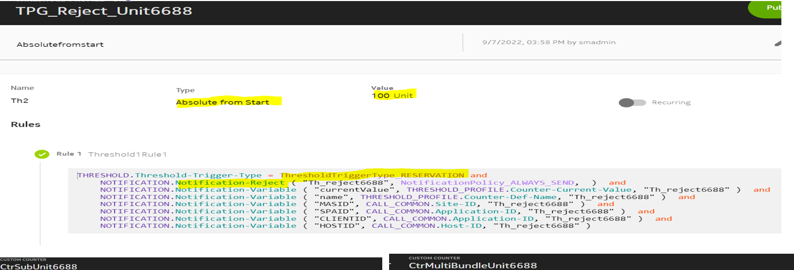
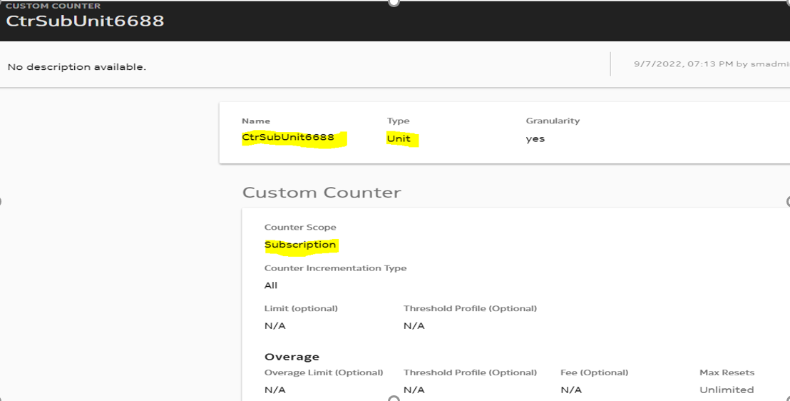
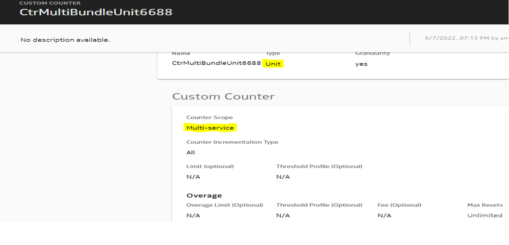
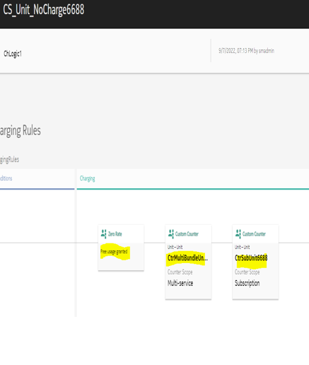
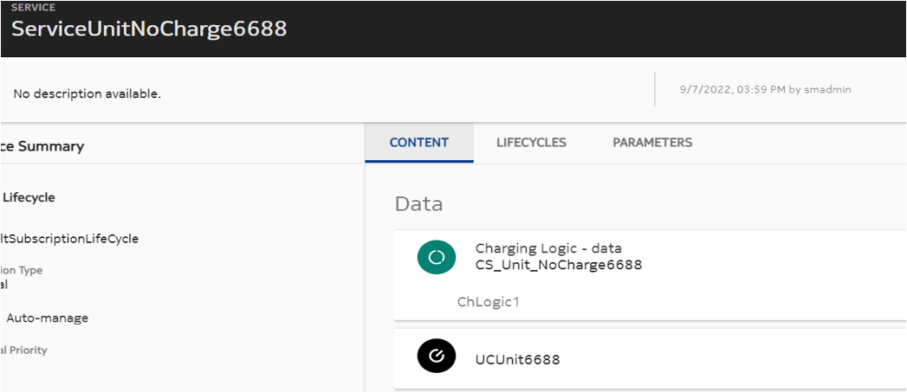

Usage Control (UC) is a network operator service that allows the user to subscribe on a per-device basis. It is controlled by a parent account and the subscription applies to the child device.
The usage control subscription allows the following functionalities:
-
Number of restrictions (for calls and messages only) through global and individual barred and allowed lists.
Allowed list overrides the allowed time of day and usage limit restrictions. Note:
Note: -
Time of day restrictions on the usage of data, voice, messages, and eCommerce during periods, days, or within a day.
-
Maximum usage (per traffic type and per billing period). The usage limit is based on traffic units (not based on related monetary amount), except for eCommerce traffic where traffic units are actual monetary amounts.
The globally defined allowed and barred lists allow the operator to bar the traffic (in case of barred lists) or skip UC controls (in case of allowed lists). Some globally defined traffic types, such as rating groups and APN combinations are excluded from the UC even when usage counting may still be applied.
During an emergency period, all UC controls are bypassed for specific traffic types configured by the operator or user.
Note:Configuration
Log into the new GUI, navigate to Charging → ☰ → Charging Management → Usage
Control. To define a new usage control, select LOGICS
and click  to add the basic details as described in the given
table:
to add the basic details as described in the given
table:
Basic Details
| Parameter | Description | Options | Mandatory/Optional |
|---|---|---|---|
| Applicability Condition | This parameter indicates a rule condition expression evaluated to determine whether the usage control service is applicable. | - | Optional |
|  | |||
| Allowed Numbers | This parameter indicates the list of numbers to be added in the UC service allowed
list. It is typically left empty, as usually set at subscription level. Click + to add a row, and enter a number. Click to delete a row. |
String | Optional |
| Barred Numbers | This parameter indicates the list of numbers to be added in the UC service barred
list. It is typically left empty, as usually set at subscription level. Click + to add a row, and enter a number. Click to delete a row. |
String | Optional |
| Usage Limit | |||
| Usage Limit Type | This parameter indicates the type of traffic, that operators wants to
be controlled by subscriber, for usage limit or time or day features. The
following usage limit types can be selected:
|
Checkbox | Optional |
| Applicability Condition | This parameter indicates a rule condition expression evaluated to determine whether the usage limit is applicable. | - | Optional |
| Usage Limit | This parameter defines the usage limit for usage control limit. It is typically set after subscription. | Mandatory | |
| Unit | This parameter defines the unit of the usage limit. | Select a value from the drop-down list. | Mandatory |
| Threshold profile |
This parameter indicates the list of thresholds to be applied during a usage limit execution. It includes notification thresholds and hard-stop thresholds. Note: |
String | Optional |
| Overage Limit | The overage limit is used to track usage once the usage limit is consumed. It is applicable only if usage limit is defined. | BigDecimal | Optional |
| Overage Threshold Profile Group IDs | This parameter indicates the names of threshold profile groups applicable for overage usages. | List<String> | Optional |
| Reference Counter | |||
| Select Counter |
This parameter is used for usage limit feature, in case operator wishes that subscriber can change the limit of an existing charging service counter (reference counter). If left empty, then a UC dedicated counter is self-created for usage limit feature. If this is filled, then Counter Name and Referenced counter IDs fields are disabled. |
Select the required counter from the drop-down list. | Optional |
| Counter Name | Use this parameter to apply a limit on the combined usage for multiple Counters (for example, data usage for 4G and 5G counters). That is, a single combined usage control limit applies on usage for multiple reference counters. This field defines the self-counter ID for usage control limit. For multi-reference self-counters, this field is sent in request along with the list provided in Referenced counter IDs. |
String | Optional Mandatory if Referenced counter IDs is filled. |
| Referenced counter IDs | This field contains the name of reference counters. These counter values are accumulated to calculate the value of multi-reference self-counter. | List<String> | Optional Mandatory if Counter Name is filled. |
| Click TIME OF THE DAY to
configure the blocked usage time for a specific day in the week.

Blocked usage time can be configured for all days at once or only for specific days of the week. The blocked usage time has a start time and end time. |
|||
| Start time |
This parameter defines the start time of the week. Format: It is typically set after subscription. |
Integer | Optional |
| End time |
This parameter defines the end time of the week. It should be greater than the start time. Format: It is typically set after subscription. |
Integer | Optional |
| Click + to add another blocked usage time
interval with start time and end time. Click to delete an interval defined for a specific day. |
|||
| Logic Details | |||
| Name |
This parameter indicates a unique name of the UC service. |
String | Mandatory |
| Priority |
This parameter indicates the priority of the usage control service. Higher the
number, lower is the priority of the usage control service.
Note:Valid range: 1 to 2147483647 |
Integer | Optional |
Examples
Example 1
For reference counter:
-
Counter (reference) from base bundle of charging service is consumed.
-
Usage limit overrides the base usage limit of the reference counter.
-
Threshold associated with the reference counter triggers the actions based on the soft-stop or the hard-stop (as configured).
Example 2
For self-counter:
-
Counter created by usage control is consumed.
-
Usage limit is the limit of the self-counter.
-
Threshold associated with the self-counter triggers the action based on the soft-stop or the hard-stop (as configured).
Actions associated with usage control
|
Action |
Description |
|---|---|
| Create | Creates a usage control entity in the database by providing details for parameters, such as Name, Priority, and Allowed List. |
| Read | Displays the usage control entity in the database. |
| Update | Updates the usage control entity in the database. |
| Delete | Deletes a usage control entity from database. |
Note:Announcement and notification for Call Message Block (CMB) and Usage Control (UC)
This feature allows you to configure announcements or notifications to be sent to the subscriber for both Usage Control (UC) and Call Message Block (CMB) in the following cases:
MT voice calls: Operators can configure this feature to not receive announcements and notifications on MT voice call from the barred numbers.
MT SMS: Operators can configure this feature to not receive notifications on MT SMS call from the barred numbers.
- Barred by block list.
- Hard-stop limit reached.
- Barred due to Time of Day (TOD).
- Hard-stop limit reached.
- Barred due to Time of Day (TOD).
- RSU is greater than the threshold delta.
- Threshold is already crossed and a direct debit call is initiated again.
Note:- Announcement for SMS/MMS calls should not be configured in GY_PRE_PROCESSING and UC_PROCESSING triggers.
- Announcement is also supported for VSA AVPs.
Use cases
- Create a Threshold of ABS type (value of 100 units) with Notification-Reject
action.
- Create a subscription counter of UNIT type.
- Create a multi-bundle counter of UNIT type.
- Create a Charging Logic with the subscription counter and multi-bundle
counter. The Charging Logic has no charge.
- Create Usage Control of UNIT Type with usage limit of 300.The Usage
Control has a reference multi-bundle counter. Attach the created TPG to the
Usage Control.

- Create bundle with the created Usage Control and Charging Logic. 
- Configure the notification template.
- Execute the SMS-IEC RSU = 100.
Result: Threshold is reached and notification is sent.
- Execute another SMS-IEC RSU = 100.
Result: Call is rejected with an error code 4012 for Hard-stop on usage limit and a notification is sent.

- Configure the rule for barring in IMS_CALL_ESTABLISHMENT.
- Create a custom data named BARREDLIST.
- Create a subscription counter of TIME type.
- Create a Charging Logic having no charge and the created subscription counter.
- Create a bundle with the Charging Logic.
- Create a device and subscribe to the bundle. Add the BARREDLIST custom data to it.
- Configure the notification template.
- Execute the IMS-I with barred number present in called party address.
Result: Call is rejected as the called number is present in the barred list. Notification and announcement are sent.
- Configure the rule for Usage Control barring in UC_PROCESSING trigger.
- Create a multi-bundle counter of UNIT type.
- Create a Charging Logic having no charge and the created multi-bundle counter.
- Create a Usage Control of UNIT type with the barred number configured.
- Create a bundle with the created Usage Control and Charging Logic.
- Configure the notification template.
- Execute the SMS-IEC MO with barred number.
Result: Call is rejected as the called number is present in the barred list of Usage Control. A notification is sent.